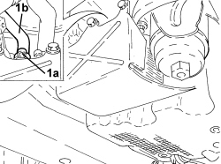
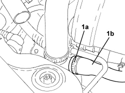

1088D51 COOLANT SUPPLY PIPE FROM CRANKCASE TO OIL/WATER HEAT EXCHANGER - R.R. WITH REAR ENGINE SUPPORT REMOVED
- Path
- Procedures > 10 ENGINE > 1088 ENGINE COOLING > 1088D COOLANT PIPES AND HOSES > 1088D51 COOLANT SUPPLY PIPE FROM CRANKCASE TO OIL/WATER HEAT EXCHANGER - R.R. WITH REAR ENGINE SUPPORT REMOVED
- Kind
- repair procedure (removal / refitting; the operation number is the code)
- Applies to
- engines: 3.2 JTS; all production periods
- Interactive page
- https://sloeber94.github.io/elrnDB-aBrrSpdr/en/#/946002018
Applies to: engines: 3.2 JTS; all production periods
 Removing
Removing
 Refitting
RefittingOp. 0010T20 ENGINE COOLANT - CHANGE
1. Loosen the band (1a) and disconnect the engine oil heat exchanger coolant outlet pipe (1b).

Applies to: engines: 3.2 JTS; all production periods
1. Loosen the band (1a) and disconnect the engine oil heat exchanger coolant outlet pipe (1b) from the water pump return hose.
- Open the intermediate retaining clip and remove the water outlet pipe from the engine oil heat exchanger.

Applies to: engines: 3.2 JTS; all production periods
Refitting
Removing- Place the engine oil heat exchanger coolant outlet pipe in position and connect it to the water pump return hose using the band.
- Connect the engine oil heat exchanger coolant outlet pipe and secure it using the band.
- Close the engine oil heat exchanger coolant outlet pipe intermediate retaining clip.